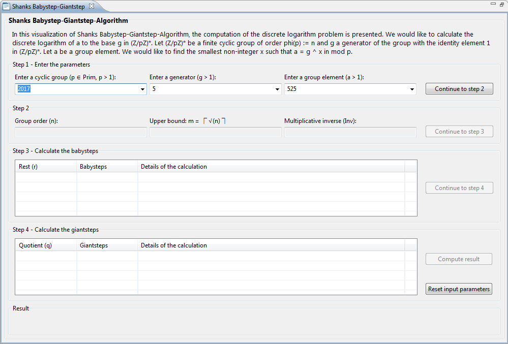
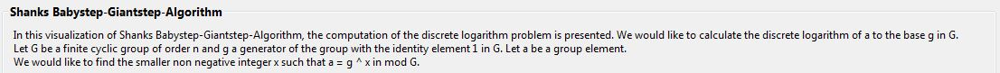
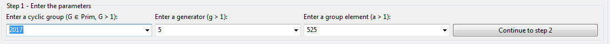
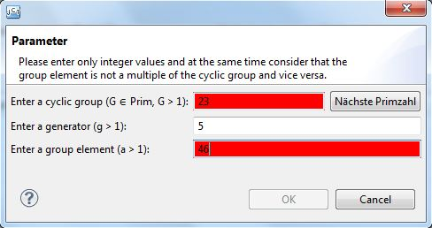
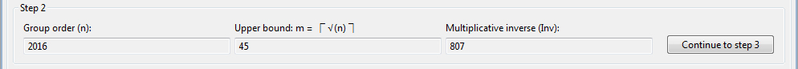
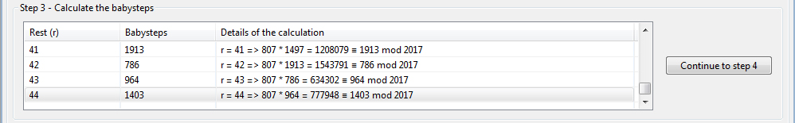
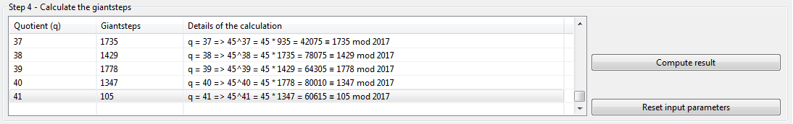
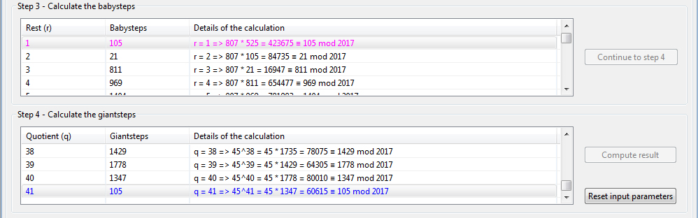
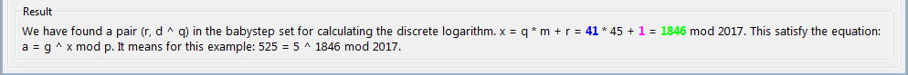
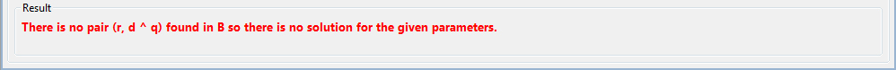

The visualization shows the functioning of the Shanks Babystep-Giantstep plug-in.
Shanks Babystep-Giantstep plug-in could be started by the menu Visualization or via Crypto-Explorer tab Visualization.

The view of plug-in contains 6 sections:
1) The first section dynamically describes the algorithm in its execution. The explanations adjust corresponding to the current step.

2) The second section contains the user inputs. The values can be entered manually or they can be chosen through the given parameters via the dropdown menus.

By clicking on the Continue to step 2 button the validity of the inputs are checked. If one or more of them are invalid a pop-up dialog will open to let you correct the entries. The invalid values are marked with a red background color.

3) Section 3 shows the calculated values of the group order, the upper bound of the order and the multiplicative inverse..

4) In the next step, section 4, the babysteps are calculated and presented in a table with all the iterations.

5) By clicking on the button Continue to step 4 the giantsteps will be calculated. The giantsteps are also presented in a table. Depending on the inputs is it possible that this step is skipped because there is no need to calculate the giantsteps.

The button Compute result will be enabled and by clicking on this button the result will be shown in the section Result. If we find a solution for the DL problem the values of the solution are marked in the tables with the same color as in the Result section.

6) The result is shown in the section Result in green. In this section the calculation formula and the output equation are also displayed.

If there is no solution for the discrete logarithm then a message is displayed.
The button Reset input parameters clears all user inputs, the calculations of the result and also clears the contents of the tables. Then you can start the algorithm again with new user inputs.
References